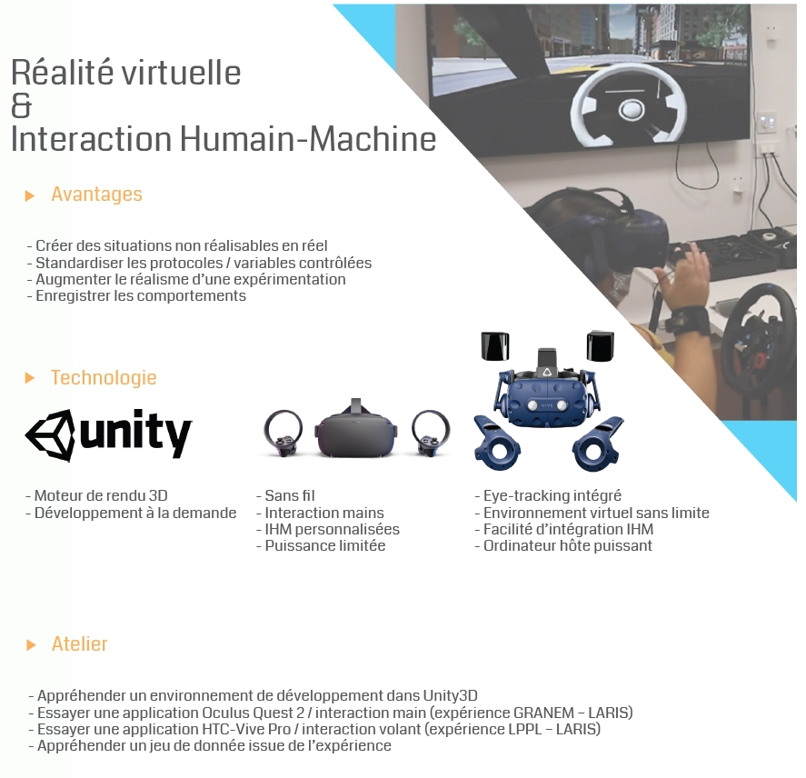
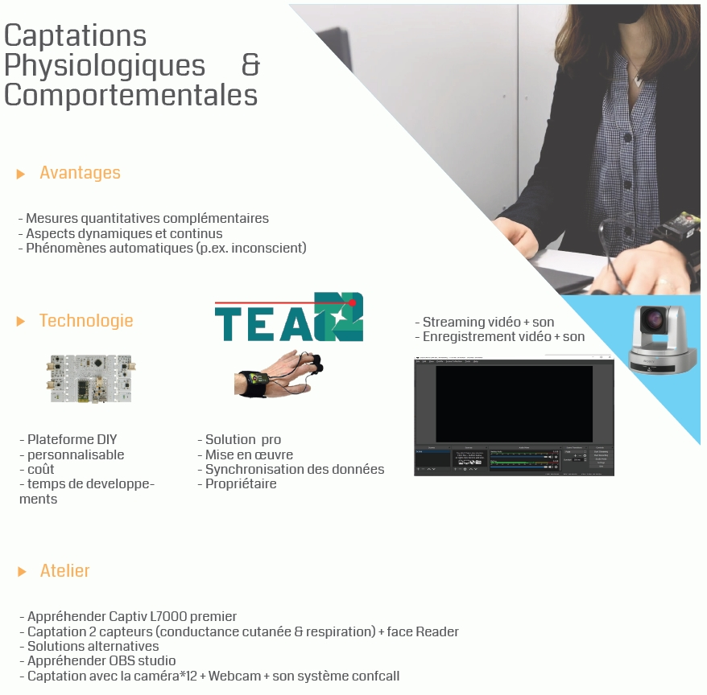
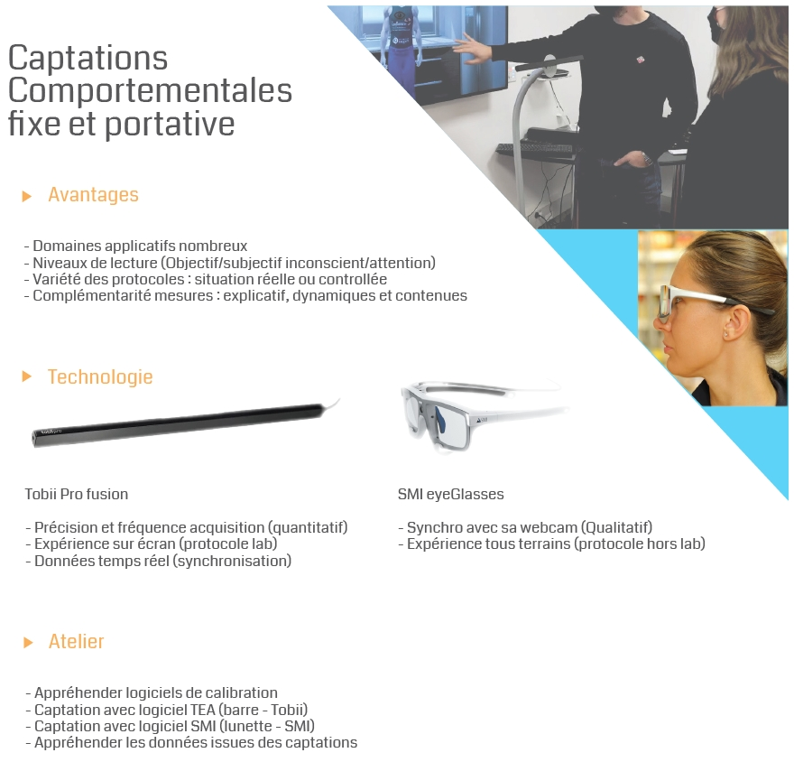

En résumé
Spécialisée en Sciences Humaines et Sociales (psychologie, marketing, économie, etc.)
Compétences et outils (informatiques, électroniques et numériques) pour l'analyse des comportements humains
Conçoit des environnements contrôlés (réels, virtuels et mixtes)
Mesure la réaction des utilisateurs (comportementale, physiologique, cognitive, etc.)
Histoire & Futur
voir le fichier CPER* ... Montage du projet
* ... Acceptation du projet (CPER et RFI)
* 16 mars 2020 Inauguration
* 5 décembre Fête de la Science
* 5 décembre Seminaire inter-université VAPEURS, EEG
* 5 décembre reportage France 5 Chaire Gaëlle, Fanny
* 2022 Mise en place site internet et outils pour expériences en ligne
* 2023 Agrandissement
Soutien R&D en SHS
Psychologie Cognitive
Dépasser les tests "papiers crayons"
pour analyser le fonctionnement cognitif de patient
Complémentarité des données comportementales
(Eyetracking)
Psychologie Sociale
Standardiser des environnements
entrainement aux softs skills
Suivi et caractérisation de la performance
Marketing & Economie
Augmenter le réalisme
Evaluer de nouvelles variables comportementales
Tourisme & Culture
Permettre des situations irréalisables
Enregistrer des données physiologiques
(FC, Conductance cutanée)
Mutualisation des compétences et des outils
Création de tutoriels sur l'utilisation de technologies utiles au SHS
blablabla
blablabla
blablabla
blablabla
Formations et organisation d'ateliers
Animation d'ateliers - accompagnement de chercheurs (masters, doctorants, MCF) 
blablabla

blablabla

blablabla

blablabla
Ouverture acteurs économiques bientôt ?
En quelques chiffres
* ... Expériences developpées
* ... Expériences hébergées
* ... Encadrements de groupes d'étudiants
* ... Ateliers de formation
* 16 mars 2020 Chercheurs formés a une utilisation d'un outil
* 2023 Agrandissement